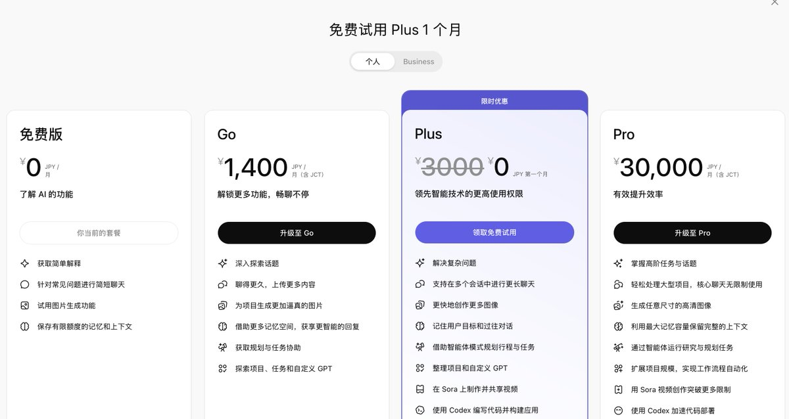
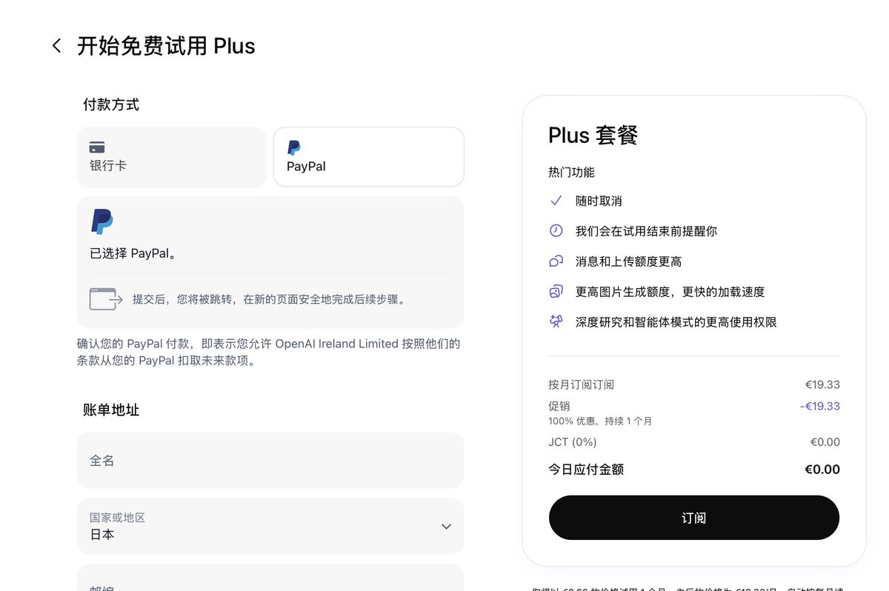

奶昔🥤
@realNyarime
有时候薅OpenAI的免费号来codex容易被封，每个新号都有30天Plus会员试用期，额度不多但足以应付日常使用完全够用
有PayPal账号即可（绑定国内储蓄卡也能用），只要按时取消订阅，就不会被扣钱
在右下角切换到欧元区（如：德国）才有PayPal选项，搞定后回到GPT的页面填写账单地址，要注意填写的国家一定要跟自己的节点一致，而不是前面选的德国
最后别忘了取消订阅：点击你的头像，进入设置，找到账户、选项，点击取消订阅
取消后，当前30天的ChatGPT Plus仍可正常使用，到期后自动停止，不会扣费！

